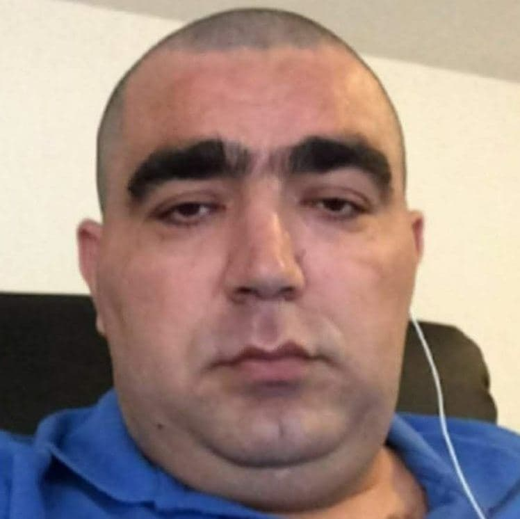
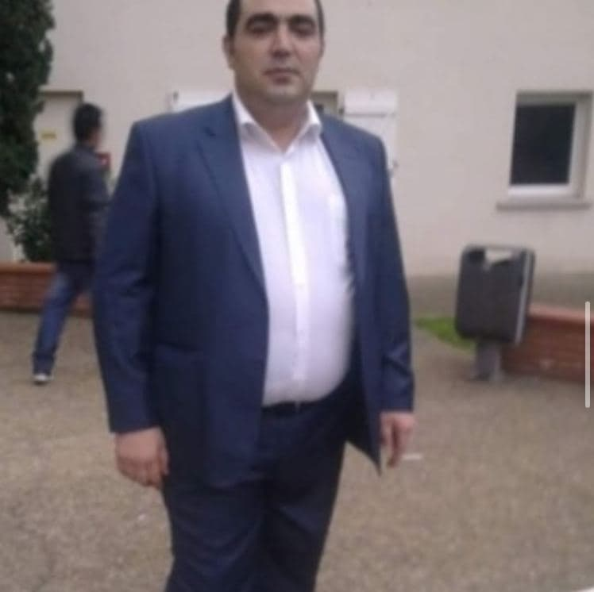

Тарiкъ Таироваъ
Тарiкъ Таироваъ - великий человек. Он родился в 1969 году в Азербайджанской ССР.
В 2010 его изгнали из Азербайджана в Тулузу (Франция). Там за ним следили французкие хакеры, которых
он в последствии носил в руках. Там он с семьей попал под расстрел. Его жена в результате погибла,
и он остался воспитывать своих детей (Таракъ, Тамараъ и Прийомныйъ Синъ, которому он так и не придумал имя) один.
В данный момент он любит физику и смотрит видеоуроки Павла Виктора, за что его уважают в обществе.
Он имеет большое количество поклонников по всему миру. Наиболее популярен он в городе Одесса, Украина.
Тут каждый школьник и студент знает наизусть биографию Тарiкъа Таироваъ.

